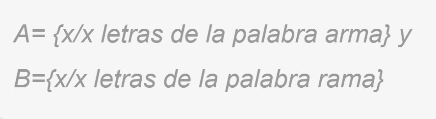

Además de relacionar los conjuntos a través de la contenencia y la igualdad, podemos crear unos nuevos a través de las operaciones entre conjuntos. Aquí aprenderás de que se trata.

Supongamos que tenemos los conjuntos M y N definidos como se muestra en la siguiente figura:
Podemos crear otro conjunto conformado con los elementos que pertenezcan a M o a N. A este nuevo conjunto le llamamos unión de M y N, y lo notamos de la siguiente manera: MUN. En la imagen de abajo puedes observar el resultado de unir los conjuntos M y N.
Al elegir qué elementos estarán en la unión de nuestros conjuntos y , debes preguntarte cuáles están en el conjunto “o” en el conjunto . El resultado de la operación será el conjunto conformado por todos los elementos del conjunto universal , que cumplan la condición de estar en uno o en otro.
Sigamos tomando como ejemplo los conjuntos M y N definidos anteriormente. Podemos determinar un nuevo conjunto conformado por los elementos que nuestros conjuntos M y N tienen en común. A este nuevo conjunto le llamamos intersección de M y N, y lo notamos de la siguiente manera: MAN.
En este caso se deben seleccionar los elementos de un conjunto que no estén en el otro. Por ejemplo, si realizas la operación M menos N, debes seleccionar los elementos de M que no están en N. Representamos la diferencia M menos N así: M\N. Observa que en este caso M\N = {a, c}.